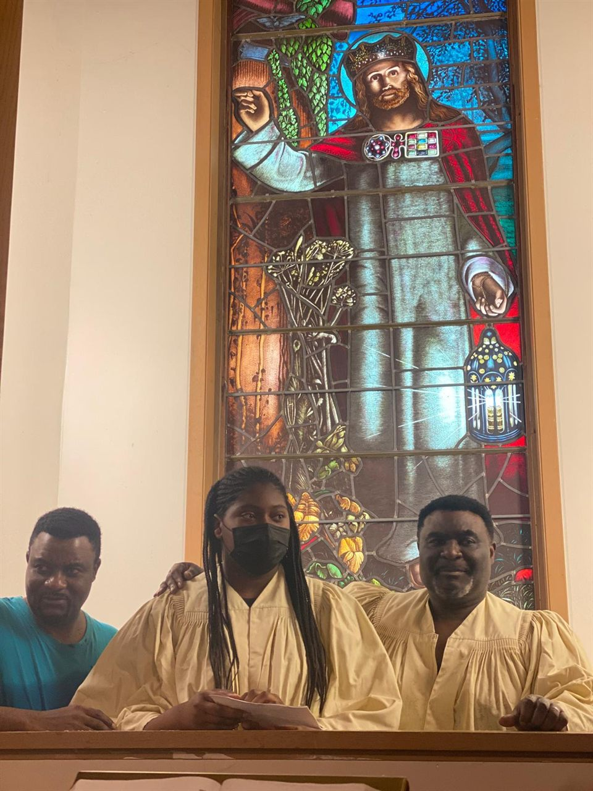
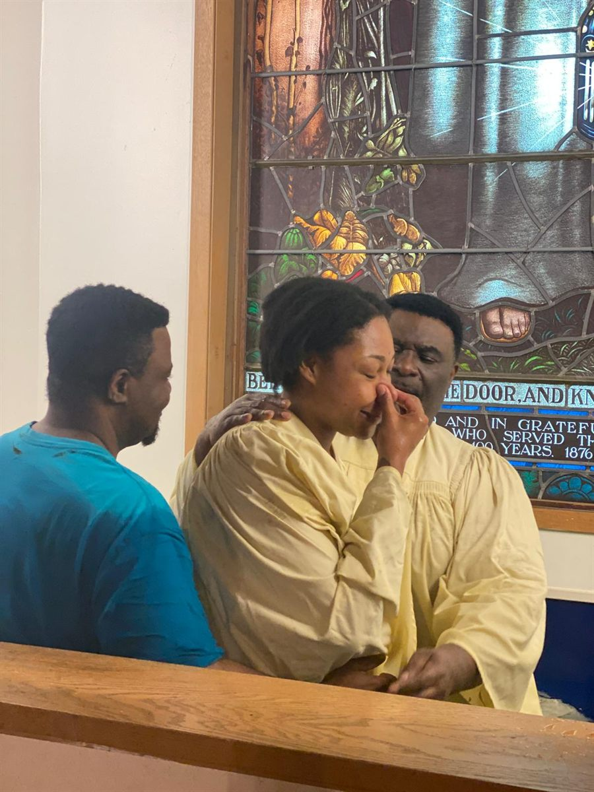
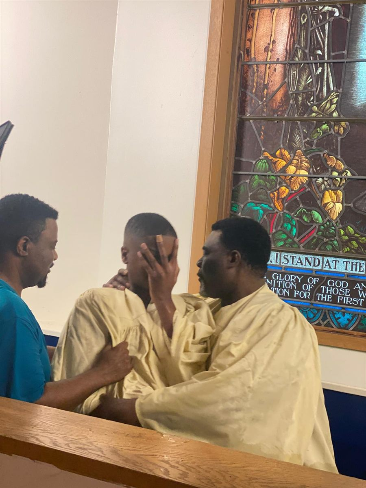
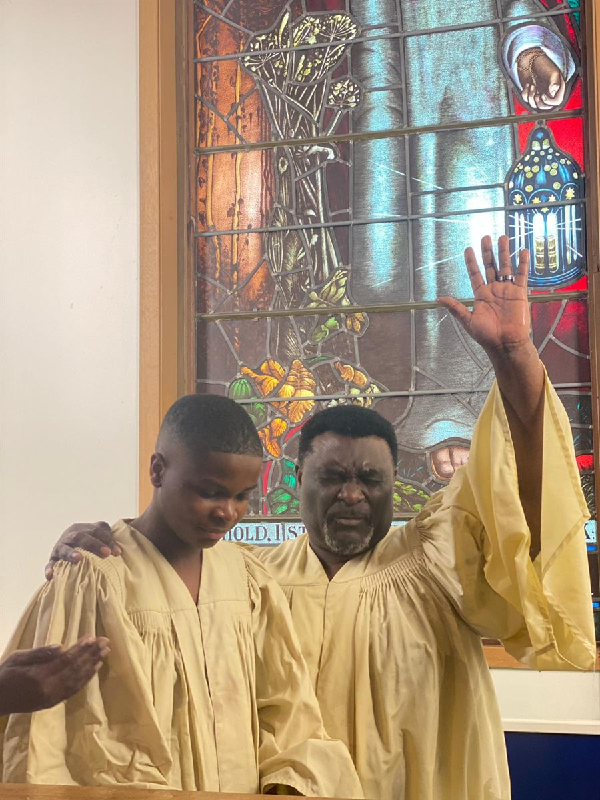
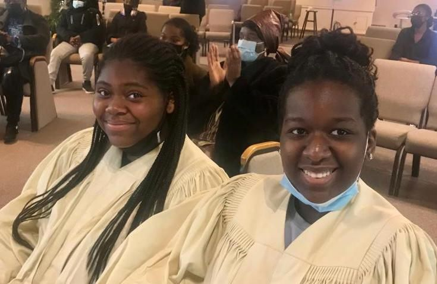

A step of obedience
Jesus told His followers to “go and make disciples of all nations, baptizing them in the name of the Father and of the Son and of the Holy Spirit” (Matthew 28:19). Being baptized is a way of following Him.
Baptism
Water baptism is a joyful, public step of faith for everyone who has accepted Jesus Christ as their personal Saviour.
What we believe
At Citywide we practise believer’s baptism by immersion. Going under the water pictures being buried with Christ; coming up out of it pictures rising with Him to walk in a new life.
“Water baptism by immersion soon after accepting Christ as personal Saviour is a testimony of death to sin and resurrection to a new life.” Citywide Belief Statement

What baptism means
Jesus told His followers to “go and make disciples of all nations, baptizing them in the name of the Father and of the Son and of the Holy Spirit” (Matthew 28:19). Being baptized is a way of following Him.
“We were therefore buried with him through baptism into death in order that, just as Christ was raised from the dead through the glory of the Father, we too may live a new life” (Romans 6:4).
Baptism is an outward sign of an inward change. In front of your church family, friends and loved ones, you declare that you belong to Jesus.
Salvation comes through faith in Jesus Christ alone: His shed blood and resurrection. Baptism doesn’t save you; it celebrates and testifies to the salvation you have already received.
Your next steps
Baptism is for believers of any age who have personally put their faith in Jesus. Here’s how to take the step with us.
Baptism follows a personal decision to trust Jesus Christ as your Saviour. If you have questions about faith, we would love to talk and pray with you.
Speak with Bishop Lwamba or one of our leaders after a Sunday service, or call or email the church.
We’ll talk with you about what baptism means, answer your questions and help you get ready.
You’ll be baptized by immersion and welcomed with joy by your church family. Invite your family and friends to celebrate with you.
Baptism Sunday
Moments from recent baptisms at Citywide.




Questions
No. We are saved by grace through faith in Jesus Christ. Baptism is an act of obedience and a public testimony of the new life you already have in Him.
Going fully under the water and rising again is the clearest picture of being buried with Christ and raised to new life (Romans 6:4), and it follows the pattern of baptism we see in the New Testament.
We practise baptism by immersion after a personal decision to follow Christ. If you were baptized another way or before you came to faith, we’d be glad to talk it through with you.
Yes, when a child is old enough to understand the Gospel and personally confess faith in Jesus. Parents are welcome to talk with us about their child’s readiness.
We’ll go over the details with you before the day. Most people bring a change of clothes and a towel.
Absolutely. Baptism is a celebration, and everyone is welcome to share it with you.
Talk to us after a Sunday service, or call .